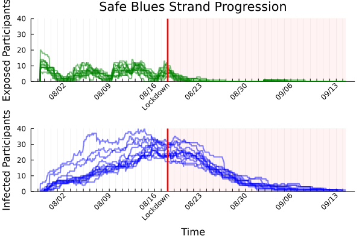

Live Updates for
Safe Blues at The University of Auckland
Last Updated: Sep 02, 2021, 01:45pm (NZST)

This AI4Pandemics page presents results from the Safe Blues University of Auckland 2021 Campus experiment, with direct relevance to the current New Zealand lockdown.
Here are live updates:
The Safe Blues experiment has nearly
200 registered student participants at the university of Auckland. The participants run the Safe Blues Android app which uses Bluetooth to spread virtual safe virus-like tokens mimimiking multiple epidemics based on the actual physical contact of the participants. This ethics approved
experiment is all about seeing how anonymized information of aggregate virtual epidemics can inform the public about the state of actual epidemics. In the long run, open sourced data from this experiment will advance AI for Pandemics research. However, there are important immediate benefits for New Zealand and Auckland as well.
In the immediate short run, since New Zealand entered a lockdown on Aug 18, 2021, live data from the experiment may be of direct use to New Zealand policy makers and the public. There are 600 virtual safe epidemics (strands) that were released to participants' phones on July 29. Now, three weeks into the course of these virtual epidemics, the lockdown will affect their trajectory in a manner that is directly measurable in near-real-time!
The key idea is that physical distancing affects virtual epidemics in a similar manner to how it affects a real epidemic. The benefit of virtual epidemics is that they are measurable in near-real time!